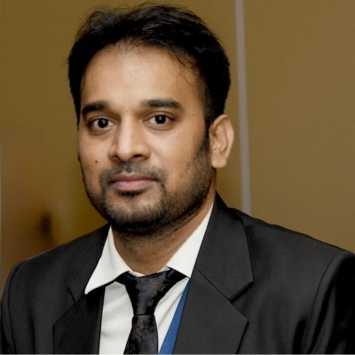
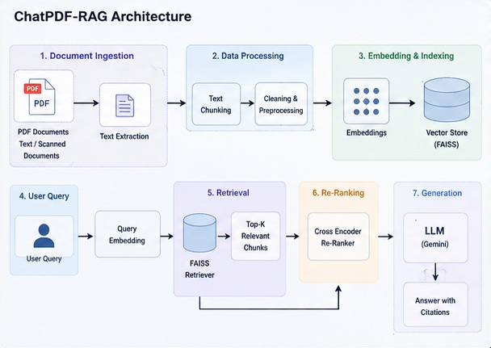
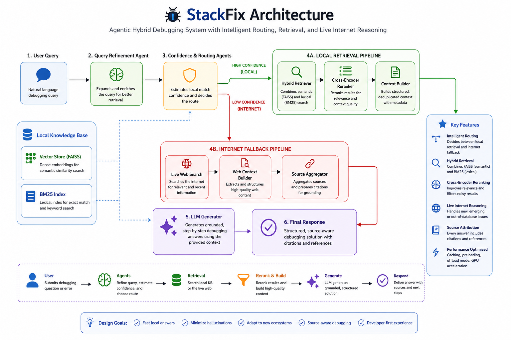
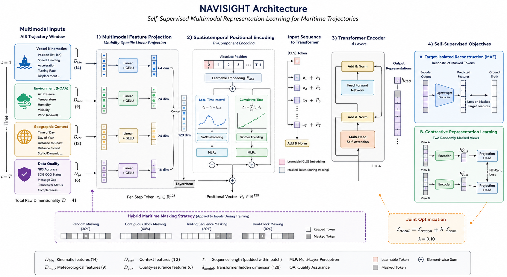
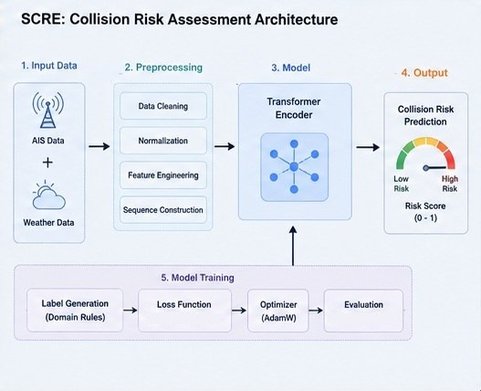

Applied Artificial Intelligence for Safety-Critical Engineering
AK Lab develops production-grade Artificial Intelligence systems combining Enterprise Knowledge Engineering, Retrieval-Augmented Generation, Agentic AI, Foundation Models, and Engineering Intelligence to solve complex industrial challenges across maritime, classification, and safety-critical domains.

Years Engineering Experience
Flagship AI Systems
Research Publications
IMO • IACS • ISSC
Artificial Intelligence delivers its greatest value when combined with rigorous engineering. AK Lab exists to bridge those two disciplines. Our work spans Enterprise AI, Industrial Intelligence, Generative AI, Agentic AI, Transformer Architectures, and Maritime Foundation Models— always grounded in explainability, trust, and production engineering.

Enterprise Retrieval-Augmented Generation platform for engineering knowledge retrieval with grounded citations and semantic search.

Multi-Agent AI troubleshooting framework that distributes reasoning across specialised autonomous agents.

Self-supervised transformer foundation model for maritime anomaly detection trained on approximately 192 million AIS observations.

Hybrid AI framework integrating AIS trajectories, weather intelligence, fuzzy logic and deep learning for ship collision risk prediction.
Peer-reviewed journal publications, industry articles, international technical contributions, and applied research spanning Maritime AI, Engineering Intelligence, Transformer Models, and Enterprise Artificial Intelligence.
Explore Research →Every flagship project within AK Lab is accompanied by detailed system architecture, data flow, component interaction, and deployment diagrams demonstrating engineering decisions beyond source code.
I am always interested in collaborating on challenging Artificial Intelligence projects involving Enterprise AI, Industrial Intelligence, Agentic Systems, Foundation Models, Knowledge Engineering, and Maritime Autonomy.